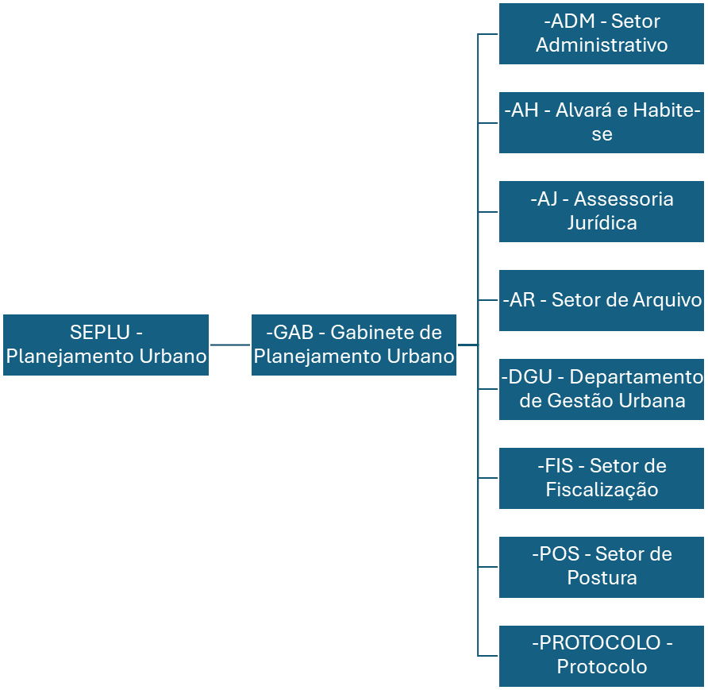

Sobre a SEPLU
A Secretaria Municipal de Planejamento Urbano (SEPLU) tem a função de examinar e despachar processos relativos a loteamentos, parcelamentos de glebas e terrenos, do uso e ocupação do solo, subsolo e espaço aéreo. A SEPLU planeja, avalia e fiscaliza as políticas públicas e ações relativas às obras públicas, ao desenvolvimento urbano, ao saneamento básico e às edificações, como também, revisa e monitora a formulação do Plano Diretor de Desenvolvimento Urbano do município.
Informações de Contato
- Atendimento: 8h às 14h de segunda à sexta
- Email: seplu@imperatriz.ma.gov.br
- Contato: (99) 9 9170-7787
- Endereço: Rua Rafael de Almeida Ribeiro, 600 - Bairro São Salvador
Dados da Secretaria
- Funcionários Efetivos: 10
- Agente Político: 1
- Funcionários Nomeados: 39
- Funcionários Contratados: 0
- Folha Bruta: R$ 178.158,66
- Maior Salário: Arquiteto Urbanista - R$ 7.676,61
- Menor Salário: Diretor de Departamento - R$ 1.500,00
- Salário do Secretário: R$ 14.800,00
Organograma
- SEPLU - Planejamento Urbano
- GAB - Gabinete de Planejamento Urbano
- ADM - Setor Administrativo
- AH - Alvará e Habite-se
- AJ - Assessoria Jurídica
- AR - Setor de Arquivo
- DGU - Departamento de Gestão Urbana
- FIS - Setor de Fiscalização
- POS - Setor de Postura
- PROTOCOLO - Protocolo
- GAB - Gabinete de Planejamento Urbano